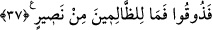

ortaklıkları var! Yahut biz onlara, (bu hususta) bir kitap mı verdik de onlar, o
kitaptaki bir delile dayanıyorlar? Hayır! O zâlimler birbirlerine, aldatmadan başka
bir şey vâdetmiyorlar.
41. Şüphesiz Allah gökleri ve yeri, nizamları bozulmasın diye tutuyor. Andolsun ki
onların nizamı eğer bir bozulursa, kendisinden başka hiç kimse onları tutamaz.
Şüphesiz O, halîmdir, çok bağışlayıcıdır.
36) Allah’ın varlığını yahut birliğini “İnkâr edenlere de” büyük günahların en büyüğü,
kabahatlerin en çirkini olan inkârlarına karşı başka hiçbir ateşe benzemeyen “cehennem
ateşi vardır.” İkinci bir ölüm hükmü verilmez; cehennemde oldukları vakit
“Öldürülmezler ki ölsünler” de azaptan kurtulsunlar, “cehennem azabı da onlara” göz
açıp kapatacak kadar “biraz olsun hafifletilmez.” Bilakis cehennemin ateşi yavaşlayıp
söndükçe alevi, yakıcılığı ve yangını artırılır. “İşte biz, küfürde ileri giden her
nankörü” daha hafif daha aşağı bir cezâ ile değil “böyle” korkunç bir cezâ ile
“cezâlandırırız.” Keşfü’l-esrâr’da der ki, Allah Teâlâ’nın “Onların varacağı ve
kalacağı yer cehennemdir ki, ateşi yavaşladıkça onun alevini artırırız.” (el-İsrâ
17/97) buyurması, onların azaplarının hafifletilmesine delâlet etmez. Bilakis ateşte bir
eksilme olursa ateş yeniden artırılır.
37. Onlar orada: Rabbimiz! Bizi çıkar, (önce) yaptığımızın yerine iyi işler
yapalım! diye feryad ederler. Size düşünecek kimsenin düşünebileceği kadar bir
ömür vermedik mi? Size uyarıcı da gelmedi mi? (Niçin inanmadınız?) Şimdi tadın
(azabı)! Zâlimlerin yardımcısı yoktur.
“Onlar” yâni kâfirler “orada: Rabbimiz! Bizi” cehennemden “çıkar” ve cehennem
azabından kurtar ve bizi dünyaya geri gönder; “yaptığımızın yerine iyi işler yapalım!”
inkâr yerine îmân edelim, isyân yerine itâat edelim “ diye feryâd ederler,” yalvarır,
yardım isterler.
“__WORD__ kelimesi gayret ve şiddetle bağırmak demektir. Âyette “__WORD__ şeklinde “__WORD__”
harfinin ziyâdesiyle gelmesi mübalağa içindir. Bu durumda kelime yardım istemek,
şefaat edilmesini talep etmek gibi anlamlara gelir.
Kâfirler daha önce yapmış oldukları amelleri, sâlih amel zannettiklerini bildirmek